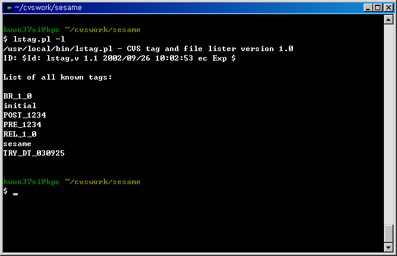

2006-05-06 00:41:36 CVS Tag 목록 보기 Eclipse 혹은 GUI 도구 없이 CVS 를 사용하다 보면, Tag(혹은 Branch) 목록을 보고 싶을 때 매우 난감하다. --;아래 Perl Script 를 현재 CheckOut 하여 작업중인 프로젝트 디렉토리에서 lstag.pl -l으로 실행하면, 모든 태그 목록을 볼 수 있다.파일 다운로드 : lstag.pl이 파일은 여기서 구했는데, 이 사람도 자기가 이걸 어디서 구했는지 모른단다. -_-;